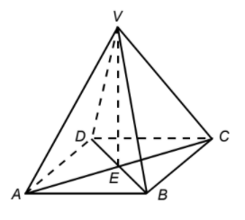

2021-03-05
Draw the following angles. VE is the height of the pyramid.
- Angle between the plane VAB and the plane ABCD.
- Angle between the plane VAC and the plane ABCD.
- Angle between the plane VAC and the plane VBC.
Answers for 2021-03-04
True or False: Determine whether the following statements must be true.
The sum of two sides of a triangle is always larger than the third side.
True. (Triangle inequality)The sum of two angles of a triangle is always larger than the third angle.
False. Consider ΔABC, ∠A=1°, ∠B=1°, ∠C=178°.If a < 0 < b, then ab < 0.
True. a and b have different signs.If 1/a < 1/b, then ab(a - b) > 0.
True.
1/a < 1/b
1/a - 1/b < 0
(b - a)/ab < 0
ab(b - a) < 0 (Multiply both sides by (ab)2 > 0)
ab(a - b) > 0